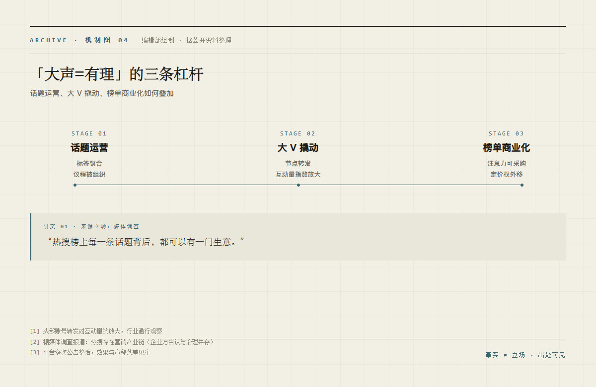

谁喊得大声谁有理：一条规则的成熟
演变期观察 · 之一 · 范围：四因子排序成熟后的微博机制。本篇拆机制，不写具体性别事件。
这一篇进入演变期。产生期的三块地基（流量验证情绪、算法定价情绪、文体量产情绪）已经就位，演变期要回答的是：这台机器如何被强化、复制、扩散。第一站是微博。「谁喊得大声谁有理」在今天听上去像句讽刺，但在机制层它是一条被多条杠杆加固过的默认规则——本篇拆它的三条杠杆：话题运营、大 V 撬动、榜单商业化。
先说清一个定位：微博不是这套机制的「罪魁」，它是第一代成熟场域。机制要在这儿长熟，才会向后续平台迁移。把矛头对准单个平台，等于又一次在找替罪羊。
四因子排序里「话题因子」给了话题标签明确权重，于是「带什么 tag」从传播习惯变成了运营技术。一个事件要被看见，得先被组织成话题：起一个容易共情的标签、拉一段容易站队的导语、找一批愿意首发的账号。这套操作对娱乐事件、社会事件一视同仁。它的后果是：议程不再是自然浮现的，是可以被组织出来的。谁先组织好话题，谁就拿到了叙事的定义权——「发生了什么」这件事，从这一刻起有了先发优势。
互动因子按互动量与增速计价，而社交网络的结构决定了互动量分布极不均匀：少数头部节点（大 V、营销号、机构号）的一次转发，顶得上普通用户几万次点赞[1]。于是撬动头部节点成为标准战术。这里要非常小心地区分两件事：大 V 转发本身是正常社交行为；但当「撬动转发」成为可购买、可组织的服务时，互动量就不再是民意的度量，而是动员能力的度量。算法分不清这两者，算法只认数字。
个体在这里面的位置值得单说一句。普通用户以为自己在「声援」，在机制层他贡献的是一次互动计价；声援的方向没错，但计价系统把「人多」折算成「有理」，这个折算才是问题。一个观点的支持者多不多，和这个观点对不对，是两个问题——在这套系统里，前者的权重被放大到覆盖后者的程度。
据媒体调查报道，热搜存在明码标价的营销产业链：冲榜、维护、撤榜各有报价[2]。平台方对此的口径是「违规内容持续治理、从未售卖热搜」，且确实多次公告整治并处罚了一批账号[3]。两边都得写：产业链的存在有调查报道为据，治理的进行也有公告为据。真实状态是拉锯——治理收窄了明面通道，但只要注意力仍集中在单一榜单上，绕道的动机就永远存在。
商业化对叙事的伤害是结构性的：当注意力可以被采购，「谁的叙事被看见」就有了第二套定价系统——一套不在明面上的。普通用户与不擅此道的表达者（包括不习惯情绪化动员的那些人），在两套定价里同时处于劣势。
引文 01 · 来源立场：媒体调查
"热搜榜上每一条话题背后，都可以有一门生意。"
—— 媒体对热搜营销产业链调查报道的概括性转述（据媒体调查报道；具体表述以原文为准，见注 [2]）。立场：媒体调查方，非平台方。

▲ 图 04：「大声=有理」的三条杠杆 · 编辑部绘制。见注 [1][2]。
「谁喊得大声谁有理」成为默认规则的标志，不是某次事件，而是人们的行为预期变了：发帖前先想「这个会不会爆」，争论时先估「我这边人多不多」，写澄清时先怕「会不会被冲」。当所有参与者都按这套预期行动，规则就完成了自我实现——它不再需要被谁执行，它长在了每个用户的肌肉记忆里。
但微博只是第一代场域。同一套「用互动定价可见度」的逻辑，很快会在新平台上以更精细的形态出现——那里的规则不奖励「喊得大声」，奖励「看起来过得对」。下一篇：小红书的 CES 评分与搜索即答案。
注 · SOURCES
[1] 头部节点转发对互动量的放大效应，系社交网络结构的行业通行观察，非精确统计。
[2] 热搜营销产业链，据多家媒体调查报道。产业链报价随时间与平台治理变化，本文不引具体价格。
[3] 平台方口径：从未售卖热搜、持续治理违规。据平台公告；与注 [2] 的调查报道并存，本文不择一。
[4] 「两套定价系统」为本文的机制分析概念，属分析性判断。
口径说明
本文为社会学观察，不站任何性别立场，作者性别不作为论证依据。事实据公开来源，观点归属已标注；涉及未证实指控不转述、不评价。拆解机制是为了理解，不是行动指南。
出口：榜单商业化难以根除，但「上榜依据的可解释性」是可以争取的——比如定期公开冲榜违规的处置数量与类型。规则不透明时，每个参与者都只能按最坏预期行动；规则透明一点，肌肉记忆才有可能松动。